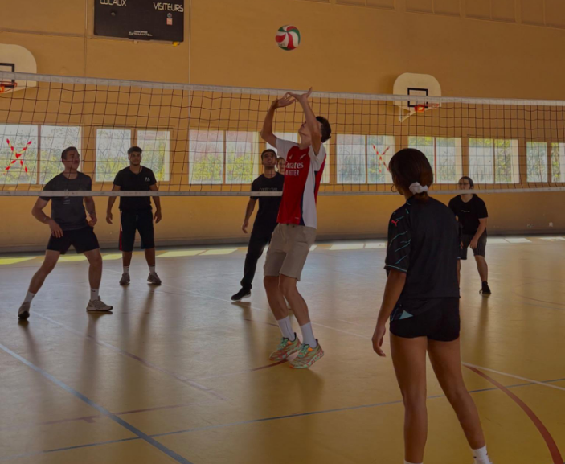

Tournois sportifs et E-sport : la vie étudiante en action
Entre les partiels, les SAE et les cours en amphi, il est parfois difficile de lever la tête du guidon. Pourtant, l'IUT, ce n'est pas seulement un lieu d'apprentissage : c'est un lieu de vie. Ce mois-ci, le BDE et le BDS (Bureau Des Sports) s'allient pour nous rappeler que la cohésion se forge aussi en dehors des salles de classe.
L'intégration est le véritable cœur battant de nos années d'études. On oubliera peut-être une formule de mathématiques ou une théorie économique dans dix ans, mais on n'oubliera jamais les moments partagés avec sa promo.
Participer aux événements de la vie étudiante, c'est briser la glace entre les différents départements. C'est aussi essentiel pour notre santé mentale : le sport et le jeu sont les meilleurs remèdes contre le stress des examens. C'est dans cet esprit de solidarité et de bien-être que l'IUT lance sa grande journée de compétition.

Préparez vos baskets, car le gymnase va trembler ! Le Tournoi Inter-Départements revient cette année avec une ambition : déterminer quelle filière règne en maître sur le campus.
L'ambiance promet d'être électrique. Que vous soyez un athlète confirmé ou un sportif du dimanche, l'important est de mouiller le maillot. Au programme cette année :
Au-delà de la performance, c'est le fair-play qui sera à l'honneur. Venez supporter vos camarades, préparez vos meilleures banderoles et montrez que votre département a les meilleurs supporters de l'IUT !
L'IUT vit avec son temps et reconnaît que la performance ne se mesure pas qu'en kilomètres parcourus. La compétition quitte le gymnase pour investir le bâtiment informatique transformé en arène numérique.
Le tournoi E-sport est l'occasion de mettre en lumière d'autres talents : stratégie, réflexes et communication ultra-rapide. L'ambiance y sera tout aussi surchauffée. Les compétitions phares incluront :
C'est une opportunité unique de montrer que l'E-sport est un vecteur puissant de rassemblement, capable de fédérer autant de passion que le sport traditionnel.
Que vous soyez plus à l'aise avec un ballon au pied ou une manette en main, ces tournois sont les vôtres. Ils incarnent la diversité et la richesse de notre IUT.
Ne restez pas spectateurs de votre vie étudiante. Inscrivez votre équipe, venez encourager vos amis, ou rejoignez simplement l'organisation pour vivre l'événement de l'intérieur. Peu importe le score final, la victoire, c'est d'avoir participé ensemble.
📅 Date : 11 Septembre de chaque année
📍 Lieu : Site Gaston Berger, Aix-en-Provence
✍️ Inscriptions : Au local du BDE ou via les annonces par mail